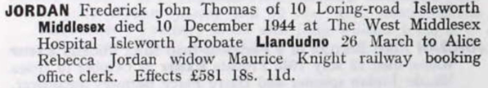
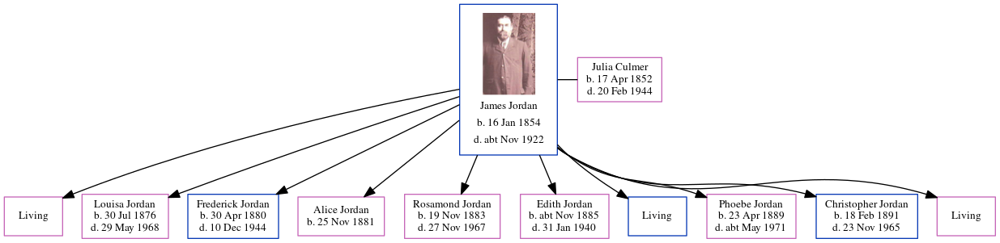

Frederick John Thomas Jordan 1880 - 1944
[ Home ] | [ Calendar ] | [ Surnames Index ] | [ Errors ] | [ Family History ]A grocer's carman and baker's salesman and the child of James Jordan (a horse keeper) and Julia Culmer, Frederick Jordan, the second cousin twice-removed on the mother's side of Nigel Horne, was born in Faversham, Kent, England on 30 Apr 18801,2,3,4,5, was baptised there at St Mary of Charity Church, Church Road on 26 May 1880 and married Alice Deal (with whom he had 1 child, Albert Frederick) at St Luke's Church, Hammersmith, London, England on 13 Apr 19077.
During his life, he was living at 2 Mill Place in Faversham on 3 Apr 18818 - less than a mile from his uncle Charles Culmer who was living at 56 Tanners Street in Faversham, on 5 Apr 18919 and on 31 Mar 190110; and at 10 Loring Road, Isleworth, London on 19 Jun 19211, on 29 Sept 19392 and in 1944. In 1921 he was working at J Lyonds & Co Cadby Hall Kensington at -, -.
He died on 10 Dec 1944 at The West Middlesex Hospital, Isleworth, London4,6.
Parents
- James was born on 16 Jan 1854
- Julia was born on 17 Apr 1852
Children
- Albert Frederick was born on 17 May 1914
Citations
- 1921 Census Of England & Wales - Findmypast (was age 41 and the head of the household)
- 1939 Register - Findmypast (was the head of the household)
- England & Wales births 1837-2006 - Findmypast
- England & Wales deaths 1837-2007 - Findmypast
- Kent, Canterbury Archdeaconry Baptisms - Findmypast
- England & Wales Government Probate Death Index 1858-2019 - Findmypast
- England & Wales Marriages 1837-2005 - Findmypast
- 1881 England, Wales & Scotland Census - Findmypast (was age 0 and the son of the head of the household)
- 1891 England, Wales & Scotland Census - Findmypast (was age 10 and the son of the head of the household)
- 1901 England, Wales & Scotland Census - Findmypast (was age 20 and the son of the head of the household)
Media
Frederick Jordon - probate

England & Wales births 1837-2006 - BMD/B/1880/2/AZ/000332/212
Kent, Canterbury Archdeaconry baptisms - GBPRS/CANT/B/96258800
1939 Register - TNA/R39/0836/0836G/002/20
England & Wales marriages 1837-2005 - BMD/M/1904/1/AZ/000142/320
England & Wales Deaths 1837-2007 - BMD-D-1944-4-AZ-000525-066
England Births & Baptisms 1538-1975 - R_885849048
England & Wales Government Probate Death Index 1858-2019 - GBOR/GOVPROBATE/C/1945-1945/00094100
Family Tree
Map
Generated by ged2site. Last updated on Jul 3, 2024
Known Issues
Residence record for 1944 contains no citation
Census information missing between Census UK 1901 and Census UK 1921